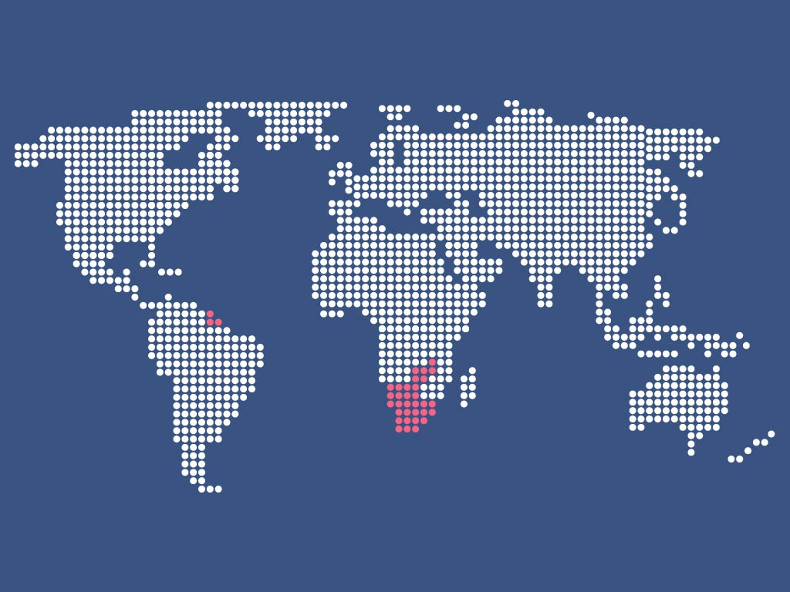
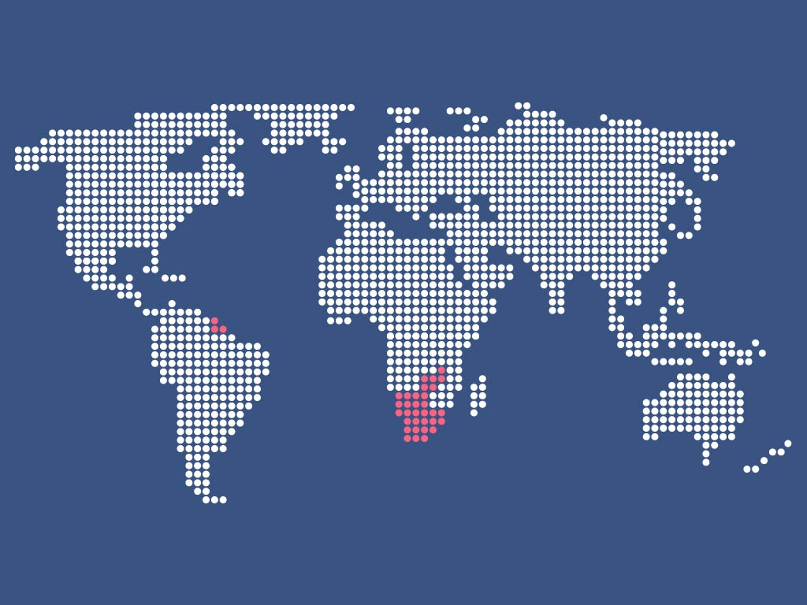

¿Qué es la desigualdad?
La desigualdad se define como el trato desigual o diferente que indica diferencia o discriminación de un individuo hacia otro debido a su posición social, económica, religiosa, a su sexo, raza, color de piel, personalidad, cultura, entre otros. La desigualdad es algo que nos afecta a todos y está presente en todo ámbito, es por esto que la ONU presenta el objetivo 10 de desarrollo sostenible, donde plantea esta problemática, en donde se ve expuesta la actual desigualdad que vivimos en el planeta.
 
